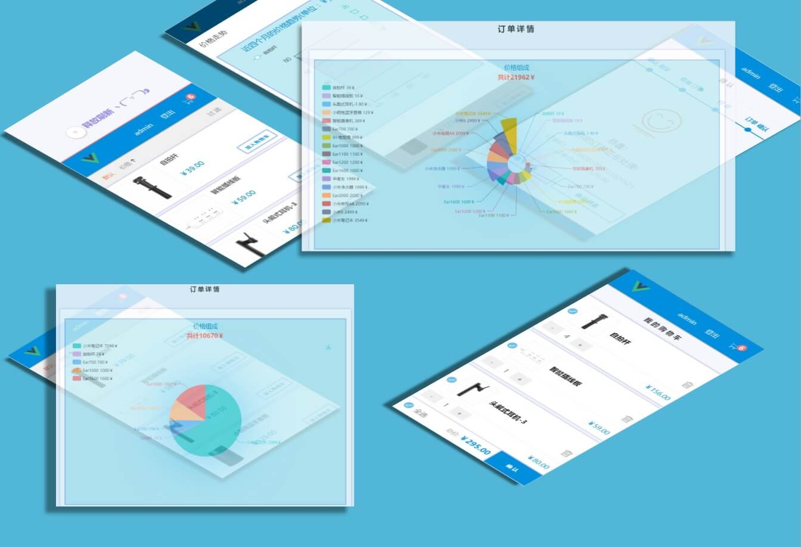

Vue全家桶 + Express + MongoDB 开发的简单商城
Vue全家桶 + Express + MongoDB 开发的简单商城，实现登录，注册，添加删除购物车，添加删除地址，完成订单，查看订单详情， 下拉刷新等功能
React全家桶版的简单音乐播放器
实现播放，暂停，点击拖拽改变播放进度， 点击改变音量, 静音， 是否自动播放, 选歌，上一首下一首， 四种播放模式[列表循环， 单曲循环，随机播放，顺序播放] 显示并滚动歌词等功能
jQuery实现音乐播放器
实现播放，暂停，点击拖拽改变播放进度， 点击拖拽改变音量, 静音， 是否自动播放, 选歌，上一首下一首， 四种播放模式[列表循环， 单曲循环，随机播放，顺序播放] 显示并滚动歌词，查询音乐，播放列表，拖拽，分享微博等功能